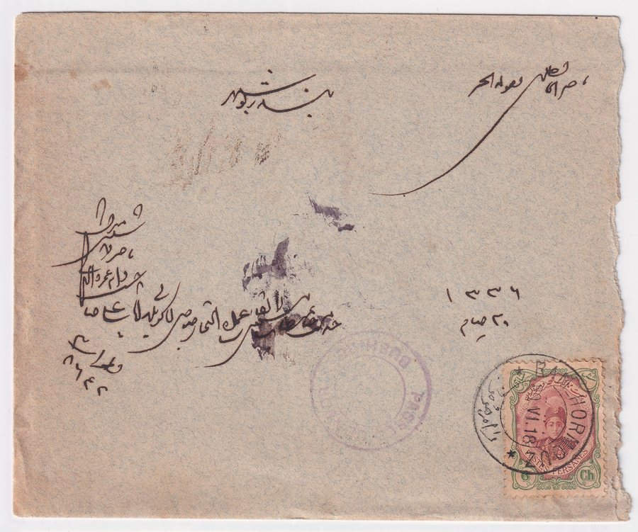
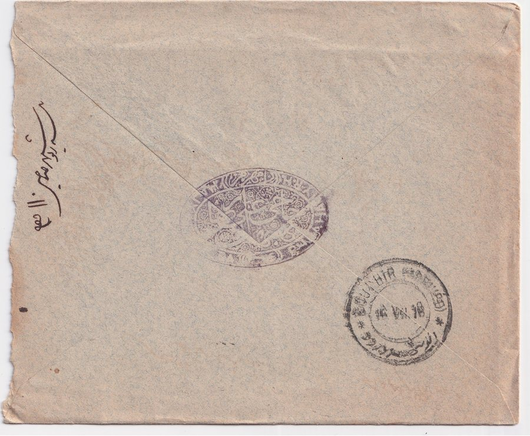

Skip to content
Persian Postal History
تاریخ پستی ایران
Home
Education
Rates
Censors
Forgeries
Collection
Resources
Censors
/
British forces, south
/
Ram Hormoz to Bushire
Cover 7 of 9 from British forces, south.
Previous in British forces, south
Behbahan to Bushire, 2 May 1918
British forces, south
9
1909
1910
1911
1912
1913
1914
1915
1916
1917
1918
1919
1920
1921
1922
1923
1924
1925
Next in British forces, south
Bushire to Behbahan, 5 Feb 1919
Ram Hormoz to Bushire
رامهرمز به بوشهر

Front.

Back.
Previous: Behbahan to Bushire
Back to all British forces, south covers
Next: Bushire to Behbahan
Close